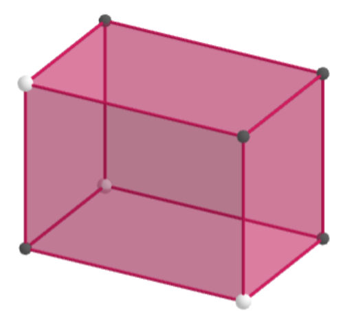

We will consider a generalization of the rectangle class example in the course document to three dimensions.
Write a class Rectangle_3D whose objects are three-dimensional rectangles in \mathbb{R}^3. The attributes should be one of the (eight) corner points, as well as the width, height and depth of the rectangle.

Three-dimensional rectangle
Write a method volume() to compute the volume of the three-dimensional rectangle.
Write a method surface() to compute the total surface area
Write a method corners() to compute a list of all corner points
You can check whether your class is constructed correctly by running the commands below and inspecting if you get the same output.
# Check for question 1a)rectangle1 = Rectangle_3D([1,2,2],2,3,4)# Check for question 1b)volume1 = rectangle1.volume()print("Volume is", volume1)# Check for question 1c)surface1 = rectangle1.surface()print("Surface is", surface1)# Check for question 1d)corners1 = rectangle1.corners()print("Corner points are", corners1)
In this exercise, we will create a different, more elaborate version of the Student class from the course document, in which we keep track of the completed courses, with corresponding grades and credits earned, of a student in a Pandas data frame.
Have a look again at Chapter 8 of the online course book to make sure your knowledge on Pandas data frames is sufficient.
Create a class Student whose objects have attributes name and progress. The name is obtained as an input argument of the class (just as in the course document). The (study) progress attribute should be initialized as an empty Pandas data frame with columns Course name, Grade, and Credits.
Hint: Create the data frame using a dictionary, whose keys are the column names and whose values are empty lists (which will later be filled when courses are added to the frame).
Running the code on the input below should give the output as indicated.
Write a method addCourse() that takes as input a course code, course name, obtained grade, and obtained credits. It should add the course name, grade and credits to the relevant columns of the frame on a new row whose name is the course code.
Running the code on the input below should give the output as indicated.
student1 = Student("Aidan Amir")# Add course Programming (30M015) # with obtained grade 8, for which 6 credits are receivedstudent1.addCourse("30M015","Programming",8,6)print(student1.progress)
Course name Grade Credits
30M015 Programming 8 6
# Add course Linear Algebra (35M007) # with obtained grade 6, for which 3 credits are receivedstudent1.addCourse("35M007","Linear Algebra",6,3)print(student1.progress)
Course name Grade Credits
30M015 Programming 8 6
35M007 Linear Algebra 6 3
# Add course Statistics for IBA (31AV98) # with obtained grade 9, for which 6 credits are receivedstudent1.addCourse("31AV98","Statistics for IBA",9,6)print(student1.progress)
Course name Grade Credits
30M015 Programming 8 6
35M007 Linear Algebra 6 3
31AV98 Statistics for IBA 9 6
Write a method credits() that computes the total number of credits obtained by a student.
Hint: Just as you can use, e.g., min() to compute the minimum of the elements in a frame column, you can use sum() to compute the sum of all the elements in a frame column.
Running the code on the input below should give the output as indicated.
student1 = Student("Aidan Amir")student1.addCourse("30M015","Programming",8,6)student1.addCourse("35M007","Linear Algebra",6,3)student1.addCourse("31AV98","Statistics for IBA",9,6)credits1 = student1.credits()print(student1.name,"has in total obtained",credits1,"credits")
Aidan Amir has in total obtained 15 credits
Write a method average() that computes the weighted average of the obtained grades in. The weights here are the number of credits. For example, if a student (as in the test output above) has obtained grades 8, 6, 9 with (credit) weights 6,3,6, respectively, the weighted average is
\frac{6 \cdot 8 + 3 \cdot 6 + 6 \cdot 9}{6 + 3 + 6} = 8
Running your code on the input below should give the output as indicated.
student1 = Student("Aidan Amir")student1.addCourse("30M015","Programming",8,6)student1.addCourse("35M007","Linear Algebra",6,3)student1.addCourse("31AV98","Statistics for IBA",9,6)average1 = student1.average()print("The weighted average of the obtained grades is",average1)
The weighted average of the obtained grades is 8.0
Question 3
In this exercise we will create a class BankAccount whose objects are bank accounts of people from which money can be withdrawn and deposited into. We will also keep track of the transfers that were made.
Create a class BankAccount whose objects have as attributes the bank account holder’s name name, which is an input argument of the class, as well as balance which keeps track of the amount of money on the account and initially is set to zero. Finally, there is an attribute transactions that is a list that keeps track of the amount of money that is deposited (positive number) or withdrawn from the account (negative number). This list is initalized as being an empty list.
Write a method deposit() that takes as input an amount of money that is deposited in the account. Add this number to the balance of the account, as well as add it to the list of transactions.
Write a method withdraw() that takes as input a (positive) amount of money that is withdrawn from the account. Substract this number from the balance of the account, as well as add it to the list of transactions (with a minus sign).
Running your methods of part b) and c) on the input below should give the output as indicated.
account1 = BankAccount("Bella")account1.deposit(100)account1.deposit(50)account1.withdraw(75)print(account1.name, "has", account1.balance, "euros in their account") print("Overview of all transactions made by", account1.name, ":", account1.transactions)
Bella has 75 euros in their account
Overview of all transactions made by Bella : [100, 50, -75]
Write a method balance_plot() that plots the balance of the account after each of the transactions in the attribute transactions. The horizontal axis of this plot should contains the index of a transaction. The balance plotted at an index i should be the balance after the first i transactions have been made.
Hint: Use the function cumsum() from the Numpy package to quickly compute the balance after each transaction based on the complete list of transactions.
Running your code on the input below should give the output as indicated.